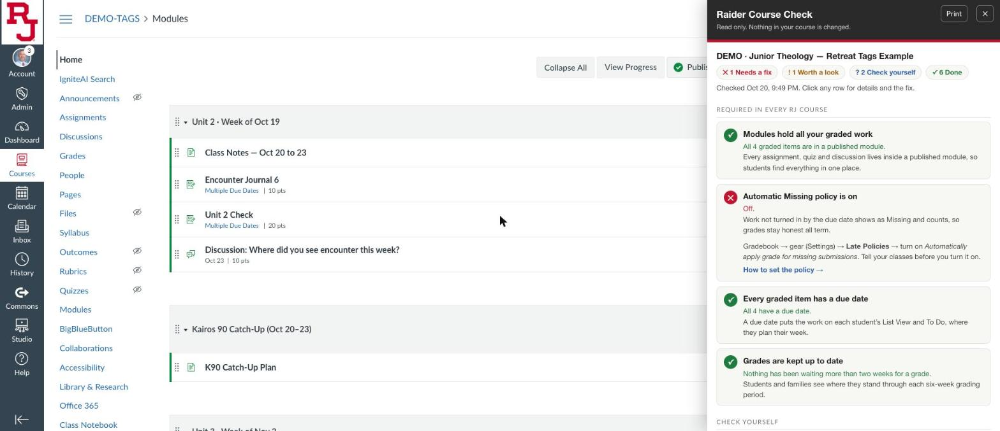

![Regis Jesuit]()
Raider Course Check
Regis Jesuit · Educational Technology
Open one of your Canvas courses, click one button, and see what’s done, what’s worth a look, and what needs a fix — with a link to each fix. It checks your course against What Every Course Must Have — the RJ Baseline.
It only reads. It never changes your course. It runs inside Canvas with your own login, so it sees only what you can already see. It sends nothing anywhere and saves nothing except the “I’ve checked this” boxes, which stay on your computer.
Once. About twenty seconds.

“Worth a look” means it might be fine — for example, a paper quiz that isn’t in a module. You decide.
When the required items are done, the panel suggests one next step from the PD course’s ladder — Foundations, Enhance, Deepen, Innovate — with links to the pages that show how. It can only see how your course is built (titles, headers, order, rubrics, checks), not how good the teaching is, so treat it as one idea to try. See the same week built at all four levels.
| Check | |
|---|---|
| ☐ | RequiredModules hold all your graded work Every assignment, quiz and discussion is inside a published module — not just linked from a page. Module setup → |
| ☐ | RequiredThe automatic Missing policy is on Gradebook → gear → Late Policies. Tell your classes before you turn it on. Set the policy → |
| ☐ | RequiredEvery graded item has a due date Including work done on paper, so it shows on each student’s List View and To Do. Every kind of work → |
| ☐ | RequiredGrades are kept up to date Students and families can see where they stand through each six-week grading period. Set up your gradebook → |
| ☐ | RequiredA written AI policy in your syllabus Where AI helps and where it gets in the way, said plainly at the start of the term. Write your AI policy → |
| ☐ | RequiredAccommodation plans set up ahead Extended time set once in Moderate (New Quizzes) or on every Classic quiz, before the student asks. Accommodations → |
| ☐ | ExpectedOne graded item each week Something you actually assess, not a completion check. Why and how → |
| ☐ | RecommendedA short menu: one route for students Students see Home, Modules and Grades (plus any tool you use). Hide the rest in Settings → Navigation. One route → |
| ☐ | RecommendedEach class or week has its date on it “Week 10: Oct 20–23” or “Lesson 2 · R 10/22 · W 10/23”, so an absent student can find the day. Pick your pattern → |
| ☐ | RecommendedPages live in modules too A page outside every module can only be found through the Pages menu or a link. |
| ☐ | RecommendedNo empty modules An empty module looks like missing work. Fill it or unpublish it until it’s ready. |
| ☐ | RecommendedOne usual due time When most work is due at the same time (8:00 AM, say), students stop guessing. |
Questions about Canvas? Teams Jason Beyer. Device or login problems: HelpDesk x8080.